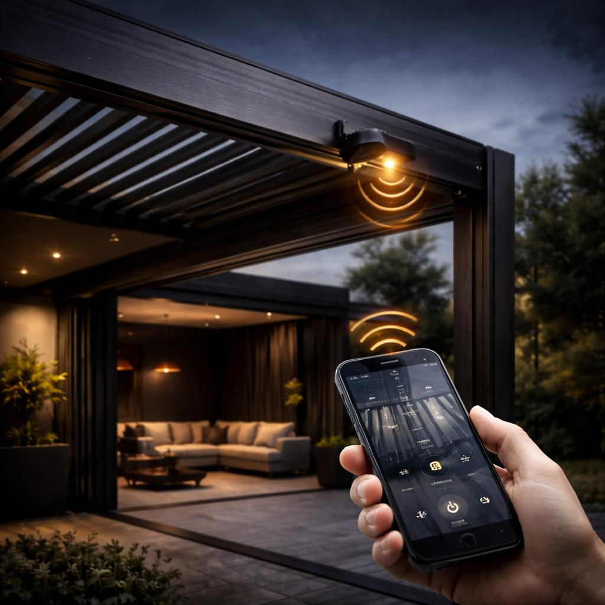
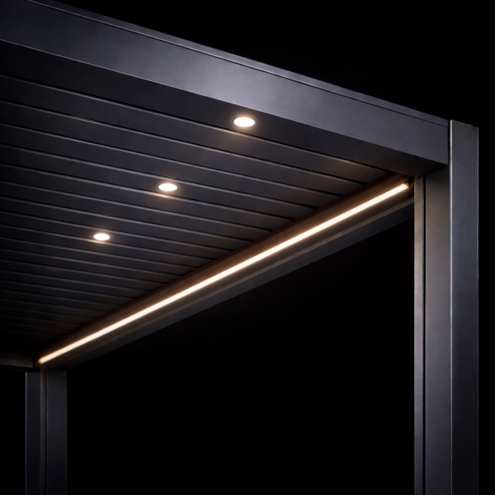
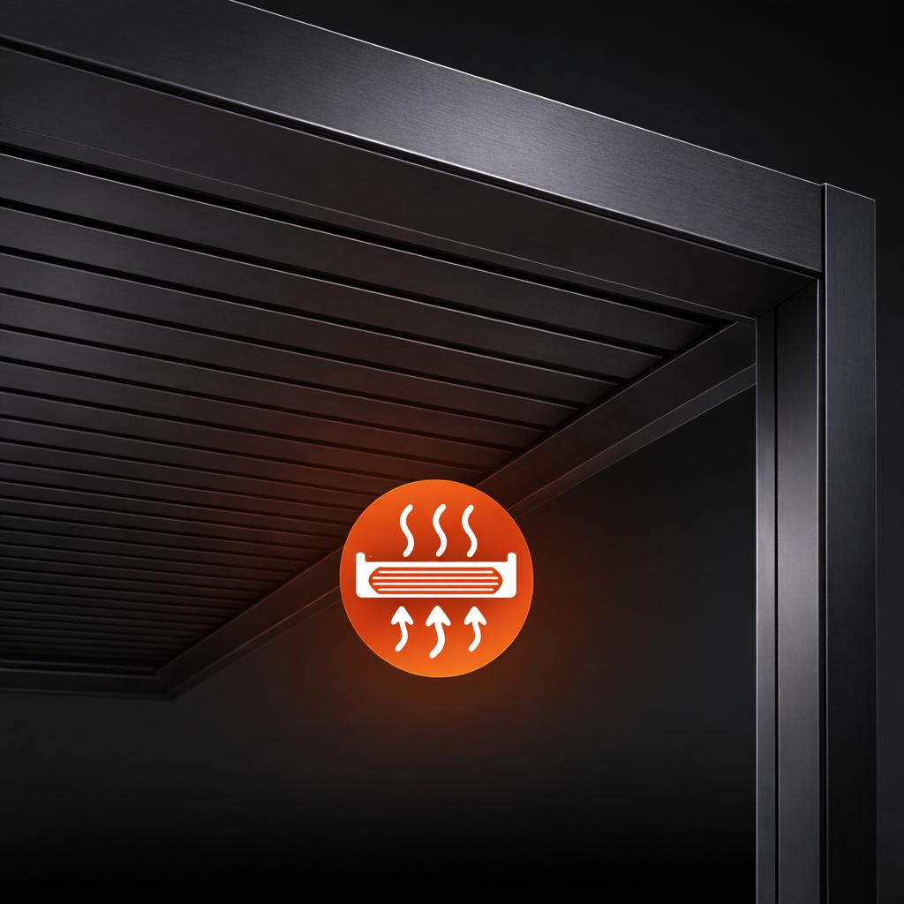

Diseño, confort y protección para terrazas, jardines y espacios exteriores en Girona y provincia.
Solicitar PresupuestoEn ERB Deco trabajamos soluciones exteriores pensadas para mejorar el confort, la protección y la estética de terrazas, jardines, áticos y porches. La pérgola bioclimática es una opción premium que permite regular la entrada de luz, mejorar la ventilación y proteger frente a la lluvia gracias a su sistema de lamas orientables.
Si buscas una pérgola bioclimática en Girona y provincia, te ayudamos a encontrar una solución adaptada a tu espacio, con acabados elegantes, estructura de aluminio y opciones de personalización para proyectos residenciales y exteriores contemporáneos.
Una solución de exterior pensada para disfrutar más del espacio durante todo el año.
Control solar
Las lamas orientables permiten modular la entrada de luz y crear sombra según el momento del día.

Diseño y resistencia
Estructura de aluminio de alta calidad con líneas limpias y acabados pensados para exterior.

Protección frente a la lluvia
Sistema de evacuación de agua integrado para mantener una estética limpia y funcional.

Confort automático
Motorización y compatibilidad con sensores y sistemas domóticos para un uso más cómodo.
Configura la pérgola según el estilo y las necesidades de tu espacio.

Iluminación LED perimetral e integrada en lamas

Toldo vertical ZIP para mayor protección lateral

Sensor de viento y sol

Calefacción para ampliar el confort en meses fríos
Si estás valorando instalar una pérgola bioclimática en Girona y provincia, puedes configurar tu proyecto y enviarnos tu solicitud a través de la web. Así podremos orientarte mejor según las medidas, acabados y opciones que más encajen con tu espacio exterior.
Trabajamos soluciones pensadas para combinar funcionalidad, protección y diseño, con una estética cuidada y materiales preparados para un uso exigente en exteriores.
Realizamos instalaciones de pérgola bioclimática en Girona ciudad y en diferentes poblaciones de la provincia, como Figueres, Banyoles, Olot, Platja d’Aro, Palamós, Blanes, Lloret de Mar, Breda, Hostalric o Arbúcies, adaptando cada proyecto a las características de cada terraza, jardín o espacio exterior.
Realizamos instalaciones de pérgola bioclimática en Girona ciudad y en diferentes poblaciones de la provincia, como Figueres, Platja d’Aro, Palamós, Sant Feliu de Guíxols, Banyoles, Olot o Roses, adaptando cada proyecto a las características de cada terraza, jardín o espacio exterior.
Si quieres consultar información sobre instalaciones en pérgola bioclimática en Barcelona y provincia.
El precio depende de las medidas, acabados y opciones como iluminación LED, sensores o cerramientos laterales. Puedes configurar tu pérgola y solicitar presupuesto desde nuestra web.
Normalmente se instala sobre una base existente como terraza o pavimento. En algunos casos puede requerir pequeñas adaptaciones según el espacio.
Sí, se pueden añadir cerramientos laterales como toldos ZIP, cortinas de cristal o paneles para aumentar la protección frente al viento o el sol.
Sí, las lamas cierran completamente y el agua se evacua mediante un sistema de drenaje integrado en la estructura.